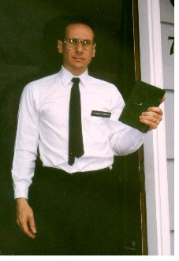

|
 |
 |
| Last minute preparations on the helmets. | Dave and Anita adding details to the "UN" helmets. | After a tough day of filming, even the cat is tired. |
aka Nothing To Fear
Our hardy band that had made three movies in one weekend in September 2001 regrouped in August 2003 to create yet another epic! This time, we decided to actually have a script written beforehand, and to that end, we had a production meeting in July to decide what exactly it was we wanted to do (and what we would need). Joining us this time were Shel and Lauren Tozer-Kilts, Larry W. Lewis and my wife Kate Waterous. Unfortunately, Erik Prill couldn't participate this year.

We decided to tackle the timely topic of weapons inspectors, which at the time were scouring Iraq looking for weapons of mass destruction (WMDs). However, we didn't have a particular axe to grind, in fact, I would make the case that this movie (which I was tempted to call Monty Python and the Weapons of Mass Destruction) reinforces whatever political viewpoint you have (conservatives will think the UN can't do anything right, liberals will know they might as well be looking Utah because there's nothing to be found anyway). For reasons that seemed more clear at the time, we decided that our intrepid inspectors would go "to the true source of the weapons" in Utah, although I have to think New Mexico would have been a more logical choice (but not as funny, right?). The working title of the movie was Somewhere In Utah, with much debate about what to really call it right down to the end.Not to give away the jokes, but the inspectors are pretty worthless, and their low-bid misspelled helmets, don't help much. They seem to overlook some obvious weapons in the hands of suspicious characters, and instead focus their attention at the homes of Mormon missionaries, a large rock, and McDonalds. But what fate awaits them at the fondue restaurant? You'll just have to wait and see...
|
|
|
| Last minute preparations on the helmets. | Dave and Anita adding details to the "UN" helmets. | After a tough day of filming, even the cat is tired. |
Meltdown
14 minutes. Mini-DV videotape. Filmed August 2003, released
January 2004.
Cast (in order of appearance): Inspectors: Larry W. Lewis,
Janet Borkowski, Anita Taylor, Shel Tozer-Kilts, and Dave
Tackett. Missionary: Ryan K. Johnson, Arab: Lauren Tozer-Kilts,
Hicks: Dave Tackett and Laurel Parshall, Infomercial actors:
Larry W. Lewis and Janet Borkowski, Crusaders: Judy Lyen, Lauren
Tozer-Kilts, Laurel Parshall, Anita Taylor, Farmer: Ryan K.
Johnson, Farmer's Wife: Judy Lyen, Woman at restaurant: Kate
Waterous.
Written and Produced by the cast, Directed and Edited by Ryan K.
Johnson. (There also exists a slightly longer version running 16
minutes called Nothing To Fear. Rather than risk
alienating people by cutting their scenes, I just created two
versions and folks can choose their favorite.)
 Back to Ryan's
Homepage
Back to Ryan's
Homepage
Escape From Seattle | Kill Roy | Doctor
Who | Star Trek: The Pepsi
Generation
What's Ryan Watching | The Wolfe Project | Mystery Science Theater 3000
Have I Got News For You | The 2001 Movies | Norwescon
Movies | Meltdown